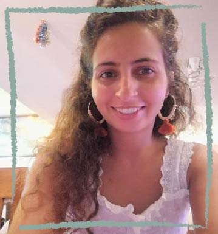

תיק עבודות עדן ברקוביץ
עדן ברקוביץ, 23, רמלה.
סטודנטית שנה א' לטכנולוגיות למידה במכון הטכנולוגי חולון.
באתר אציג כמה מהעבודות שנעשו במהלך השנה אשר משקפות את התהליך הלמידה שעברתי .
מזמינה אתכם להתרשם ולהנות מהתוצרים שבחרתי להציג.
תהנו!
